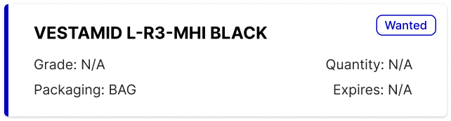

Brenntag’s branches operated in isolation, buying externally while sister branches held slow-moving stock. I translated the business vision into an experience that felt as simple as B2C commerce and made the “TicketSwap for chemical stock” concept tangible enough to secure full-time funding.
- Shaped the proactive marketplace strategy.
- Designed Smart Match flows connecting product managers across regions.
- Created an interface that reduced the learning curve for procurement teams.
